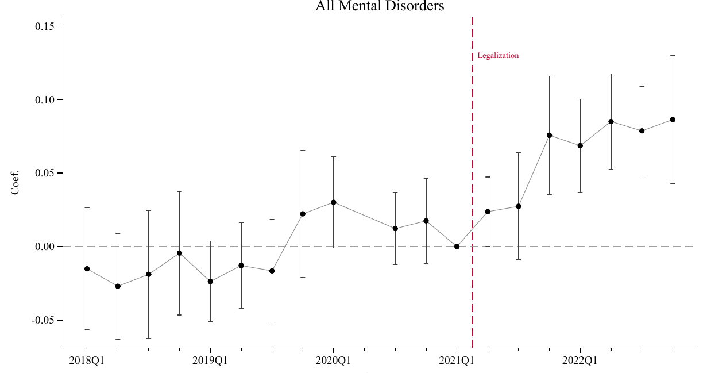
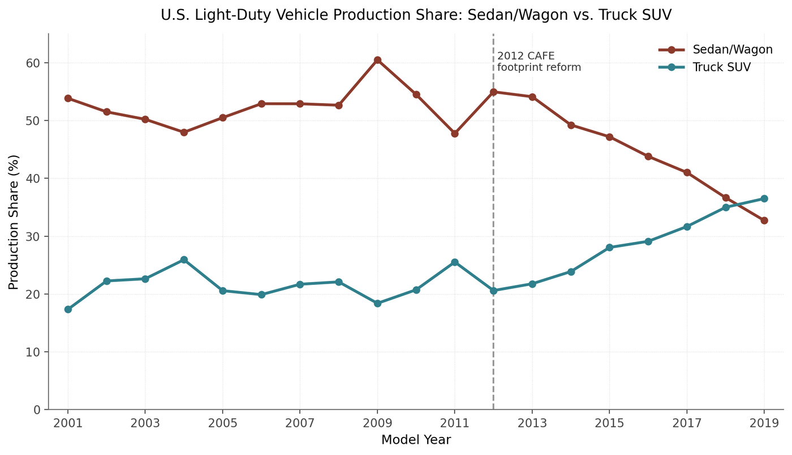
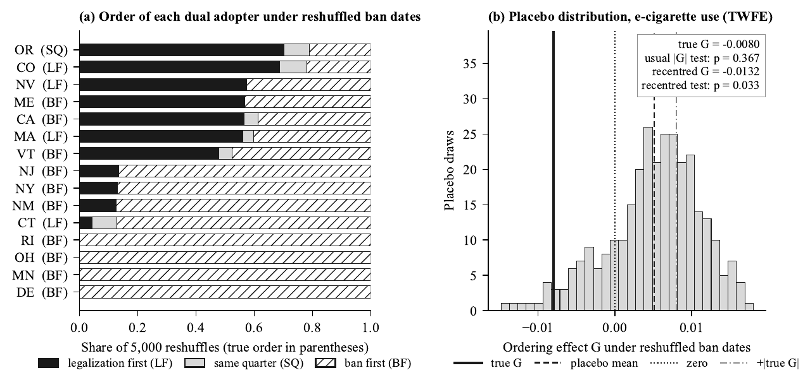
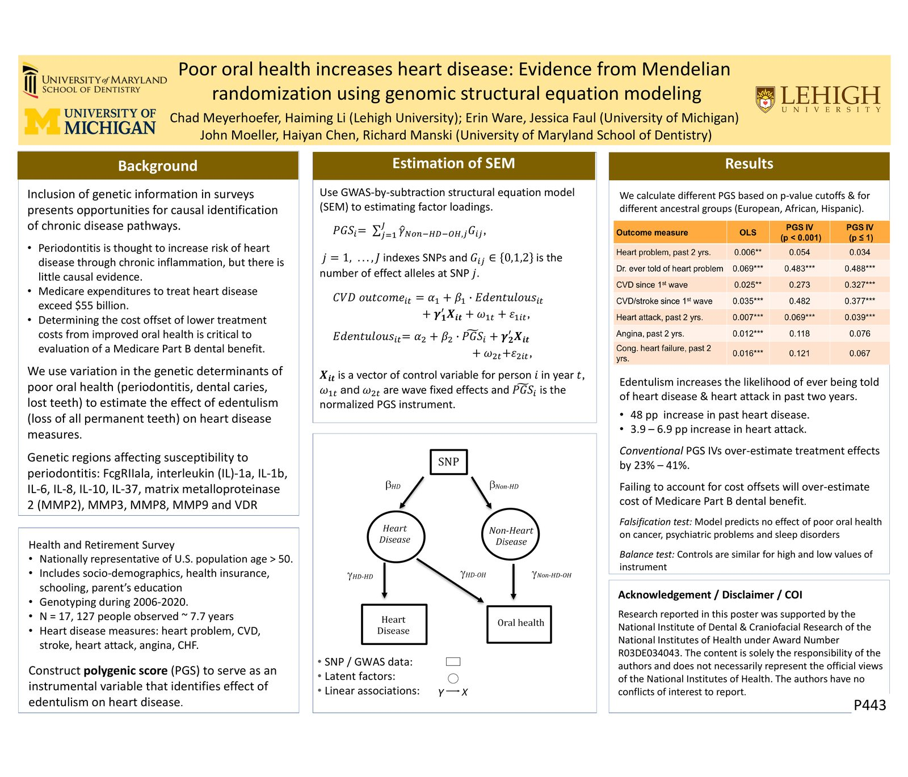
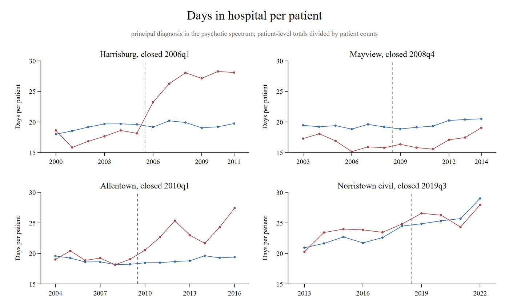

Fields
- Primary
- Health Economics
- Secondary
- Applied Econometrics; Industrial Organization
Job Market Paper
Cross-Border Spillovers of Recreational Cannabis Legalization on Mental Health: Evidence from Pennsylvania
Recreational cannabis legalization has spread across the U.S., so that residents of states that still prohibit sales often live within driving distance of a legal market. I investigate whether New Jersey's legalization of recreational cannabis in 2021 affected psychiatric hospitalizations in neighboring Pennsylvania, which permits only medical cannabis use. Using inpatient discharge records for 2018-2022, I compare matched ZIP codes in Pennsylvania counties near New Jersey dispensaries to ZIP codes far from the New Jersey border, before and after the legalization of recreational cannabis in New Jersey. Following legalization, psychiatric hospitalizations in ZIP codes within two hours of New Jersey dispensaries increased by 0.83 per 1,000 residents per quarter, or 6.8 percent. My results indicate that the additional hospitalizations occurred for depression, alcohol- and tobacco-related disorders, dementia, and psychosis. Cost-benefit assessments of legalization should account for externalities imposed on neighboring states.


Working Papers
Fueling Out of Work: Vehicle Market Restructuring and Labor Supply among Car-Dependent Workers
We study whether fuel-economy regulation affects labor supply by reshaping vehicle markets. The 2011 CAFE footprint reform made standards less stringent for larger vehicles, shifting production away from compact cars and reducing the supply of entry-level vehicles. Using CPS ASEC data for 2001-2019 and a rural-urban difference-in-differences design, we find that rural labor force participation and employment fell by about 0.9 and 1.0 percentage points, with larger declines among low- and middle-income adults. Employed rural workers moved to longer hours and full-time work, consistent with higher fixed costs of working for car-dependent households.


Placebo Tests for Policy Order: A Cautionary Note from Vaping Bans and Cannabis Legalization
Studies of whether the order of two staggered policies matters often use a fake-timing placebo that reshuffles one policy's dates. We show that the reshuffle leaves many states' order unchanged, so the placebo distribution is not centered at zero; recentering it restores the test's power. In an application to indoor vaping bans and cannabis legalization, an ordering effect on adult e-cigarette use passes the recentered test but fails pre-trend and leave-one-out checks.


The Causal Effect of Poor Oral Health on Heart Disease: A GWAS-by-Subtraction Genomic Structural Equation Instrumental Variables Model
We estimate the causal effect of edentulism on heart disease using genetic data in the 2006-2020 Health and Retirement Study. A GWAS-by-subtraction structural equation model yields a polygenic score for poor oral health that excludes genetic variants with direct effects on heart disease. Edentulism raises the likelihood of a heart disease diagnosis by 48 percentage points and of a heart attack in the past two years by 3.9 to 6.9 percentage points, with larger effects for men. Cost estimates of a Medicare dental benefit that leave out these offsets may be too high.
Poster (PDF)Supported by NIH/NIDCR R03DE034043

Do State Psychiatric Hospital Closures Increase Length of Stay in Acute Care Hospitals? Evidence from Pennsylvania
I study four closures of Pennsylvania state psychiatric hospitals between 2006 and 2019, using all inpatient discharge records and difference-in-differences with permutation inference. After the Harrisburg closure, inpatient days per patient with a psychotic disorder rose by 8.8 per year, about half the baseline, while admissions did not change; after the Allentown closure they rose by 4.3. The added days came from stays longer than 90 days in county-funded long-stay units, and nine tenths of the added Harrisburg days were billed to Medicaid and Medicare. The other two closures show no detectable change.


Does Dental Coverage Reduce the Financial Burden of Heart Disease?
Using the Health and Retirement Study for 2006-2020, we instrument total tooth loss with a polygenic score for dental caries that excludes genetic variants with direct effects on heart disease. Tooth loss raises the probability of any out-of-pocket spending on heart disease by about 39 percentage points, or about $500 per two years under an incremental-cost measure, but does not raise catastrophic health spending.
Policy Spillovers Across Substances: E-Cigarette Regulation, Cannabis Legalization, and Health Outcomes
Work in Progress
- Do Foreign Policies Save American Lives? Evidence from China's Fentanyl Control
- E-Cigarette Regulation, Recreational Cannabis Legalization, and College Outcomes: Evidence from New York State